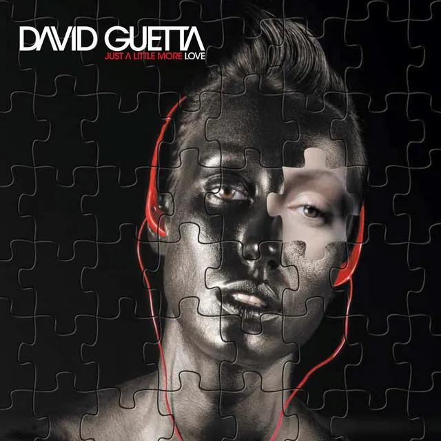
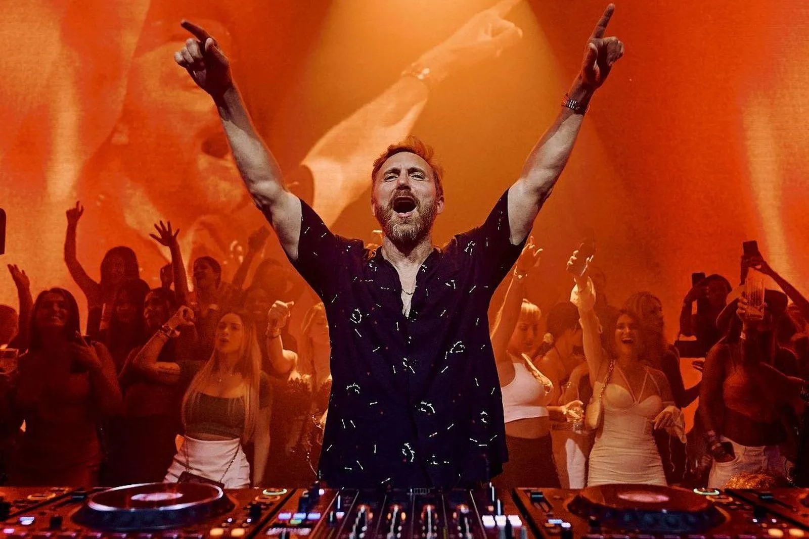
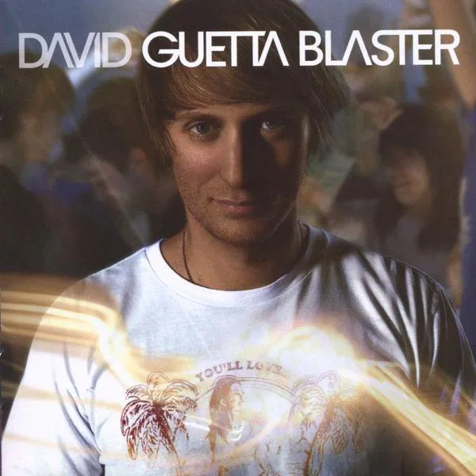
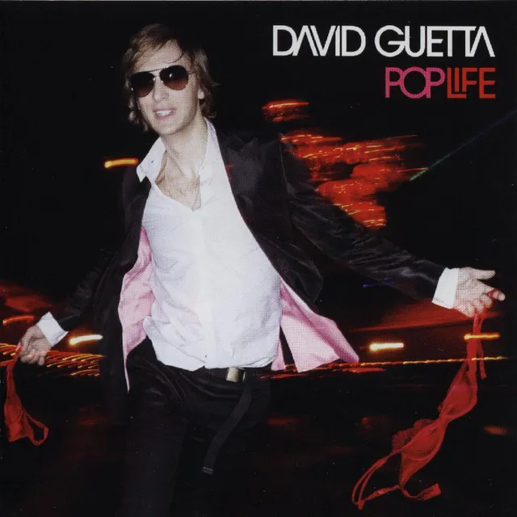
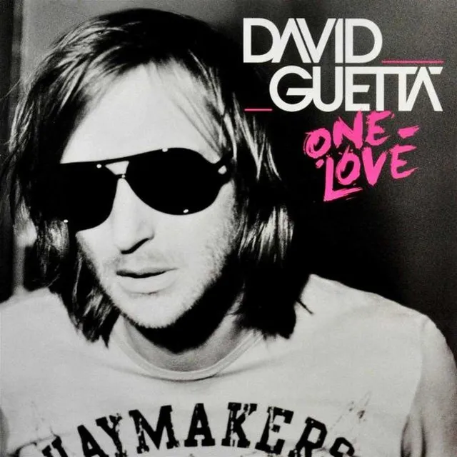
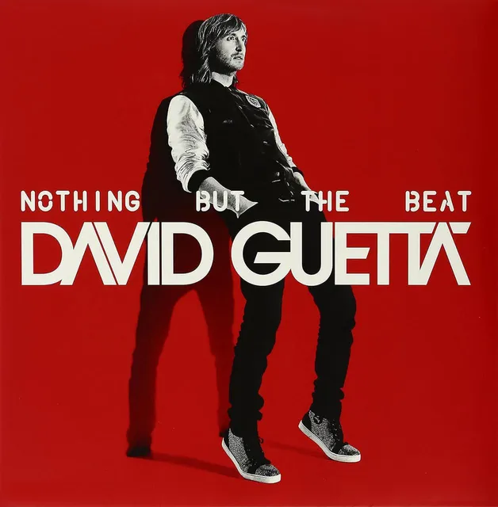
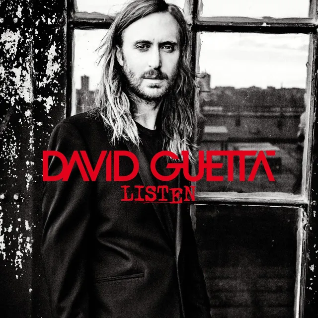

Just a Little More Love 2002
El debut con el que presentó su propuesta de música house y electrónica.

El sonido que conecta al mundo.
DJ, productor y compositor francés que llevó la música electrónica a escenarios globales. Su estilo combina house, EDM y pop, y sus colaboraciones con artistas internacionales han dado algunas de las canciones más conocidas de la música dance.
Ver su set en Tomorrowland 2019Pierre David Guetta nació el 7 de noviembre de 1967 en París. Empezó como DJ en los clubes de la ciudad durante la década de 1980, donde se enamoró de la música electrónica y la cultura de club.
En 2002 publicó su álbum debut, Just a Little More Love. Con los años consolidó su carrera internacional gracias a producciones que mezclan la electrónica con voces y estilos del pop. Álbumes como One Love y Nothing but the Beat ampliaron su presencia en las listas y en los festivales de todo el mundo.
Ha trabajado con artistas como Sia, Kelly Rowland, Akon, Usher, Rihanna, Nicki Minaj, Bebe Rexha y Anne-Marie. También ha explorado otros sonidos con proyectos como Jack Back y el Future Rave, el estilo que desarrolló junto al DJ y productor MORTEN.
Sus siete álbumes de estudio, del house de club de 2002 al dance-pop de estadio.

El debut con el que presentó su propuesta de música house y electrónica.

Continúa la exploración de sonidos house y dance.

Desarrolla su estilo electrónico y amplía sus colaboraciones.

Combina la electrónica con voces y sonidos del pop internacional.

Uno de sus álbumes más reconocidos, pensado para la pista de baile.

Una propuesta más amplia de producción y colaboraciones.
Reúne distintos estilos y facetas de su carrera.
Las colaboraciones son el centro de su identidad artística. Ha trabajado con artistas del pop, el hip-hop, el dance y la electrónica:
Sets completos y aftermovies del canal oficial. Elige uno y se reproduce aquí mismo.
Set completo en el festival de Boom, Bélgica.
Empieza a trabajar como DJ y se acerca a la cultura de la música electrónica.
Publica Just a Little More Love.
Sigue desarrollando su sonido electrónico.
Amplía su alcance dentro de la escena dance.
Un álbum clave en su expansión internacional y en sus colaboraciones con artistas pop.
Canciones con gran difusión internacional.
Combina producción electrónica con colaboraciones vocales.
Un proyecto que reúne distintos enfoques de su carrera.
Sigue lanzando música, colaborando con otros artistas y tocando en festivales internacionales.
Ha ayudado a llevar la música electrónica a públicos masivos: colaboraciones con artistas pop, producciones para festivales y canciones que suenan igual en clubes, emisoras y plataformas digitales.
Su trayectoria muestra cómo un DJ puede crear canciones populares sin dejar una carrera centrada en la cultura de club y el espectáculo en vivo.
Ha recibido premios y nominaciones de la industria musical internacional. El sitio oficial de los Grammy registra 2 premios y varias nominaciones; como el conteo cambia con cada ceremonia, conviene consultarlo en grammy.com.
También ha ocupado posiciones destacadas en el ranking DJ Mag Top 100 DJs en varias ediciones.


Toca una foto para verla en grande.
Escucha sus lanzamientos y sigue sus próximos anuncios en las plataformas oficiales.